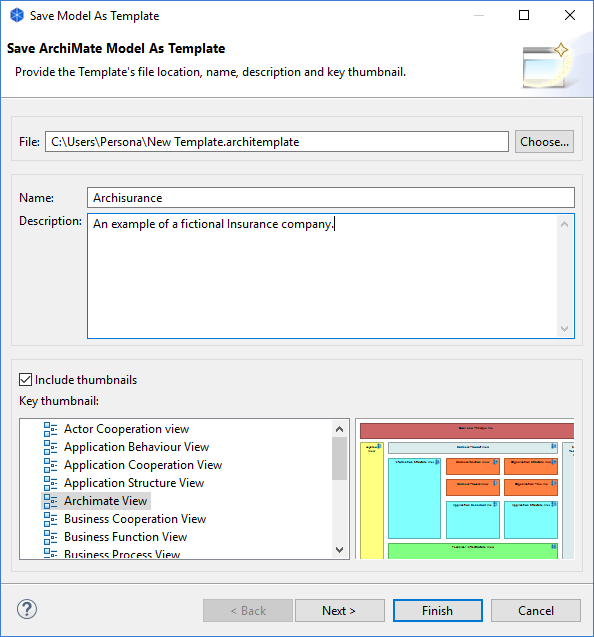
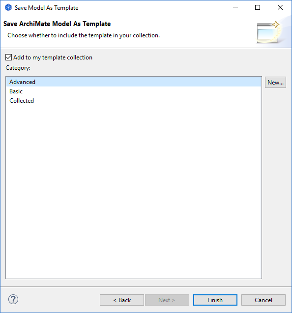

创建新模板
要创建新模板，请按以下步骤操作：
- 创建新的 Archi 模型或打开您创建的现有模型并对其进行编辑，使其成为您想要的模板。
- 确保要保存为模板的模型已打开并已在模型树中选中。
- 从主菜单中选择“文件->另存为模板...”菜单项。将打开一个向导：

- 在向导中，为模板文件的位置提供文件名、模板名称（这与模型名称不同）和说明。
- 选择是否要在模型模板中包含视图的大纲。如果您选择在模板中包含视图的大纲，请选择哪些图像将是“关键”大纲。这将是“从模板新建模型”向导中显示的第一个大纲。
- 点击“下一步”进入向导的下一页：

- 选择是否要将模板添加到您的收藏中。您的模板集合是一个按类别分类的列表，这些类别将显示在“从模板新建模型”向导中。如果没有可供选择的类别，您可以通过单击向导中的“新建...”按钮来创建一个新类别。
- 按“完成”。
模板将以“*.architemplate”扩展名保存在您的文件系统中。如果您愿意，可以与其他 Archi 用户共享此模板。